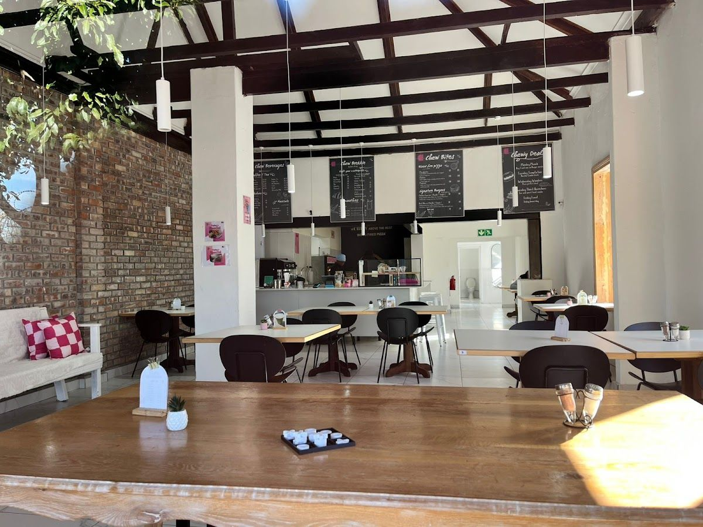
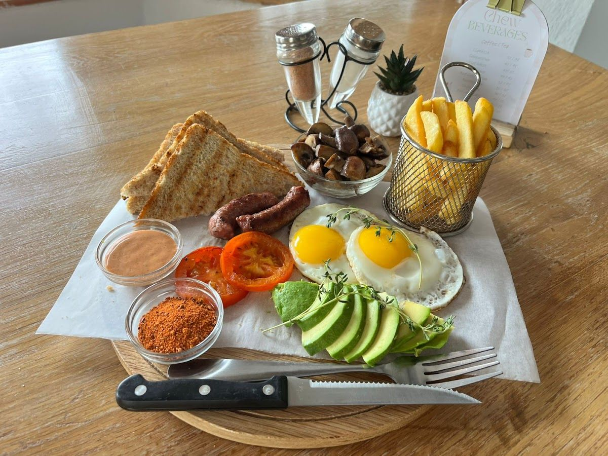
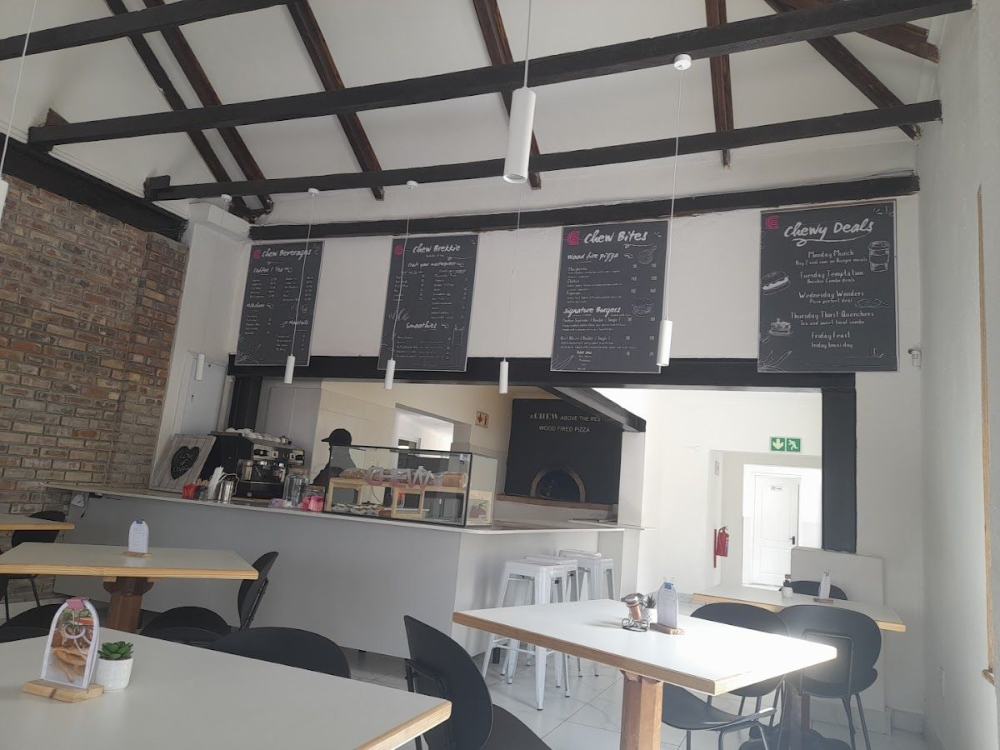
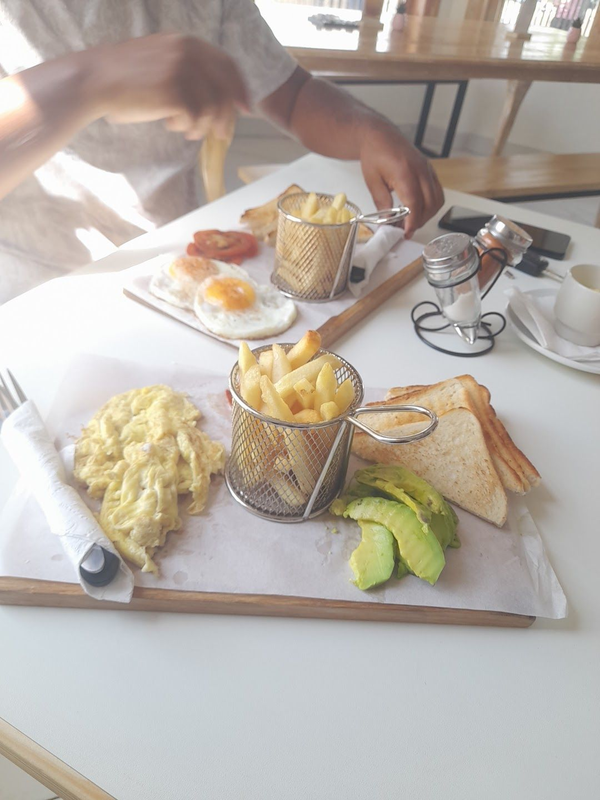

Heartwarming meals, generously given with love in a spacious atmosphere.
Get In TouchCHEW is a family restaurant located in the heart of Wynberg, Cape Town. We specialize in providing heartwarming meals that are generously given with love. Our spacious, high-ceilinged environment is perfect for families looking to enjoy a comfortable dining experience.
Our story began with a passion for creating a welcoming space where families and friends can gather to enjoy delicious food. At CHEW, we believe in serving meals that are not only filling but also filled with love and care. Our chefs use only the freshest ingredients to create dishes that will leave you satisfied and happy.
We are committed to offering a warm and welcoming atmosphere where our customers feel at home. Our team is dedicated to providing excellent service and ensuring that every visit to CHEW is a memorable one. Come and experience the love and passion that we put into every dish.
Discover the heartwarming meals and generous service that make CHEW a beloved family restaurant in Wynberg.
Indulge in our carefully crafted dishes, made with love and the finest ingredients. Each meal is a testament to our commitment to quality and taste.
Here is what our clients say about us.
"Excellent service and delicious food. The restaurant is clean, well-run, and offers great value for money. Highly recommended."— La-eeqah Lodewyk, ⭐⭐⭐⭐⭐
"Mabrook!!! Maashallah!!! Can't wait to share the experience! It looks mouthwatering"— Zaida Da Silva Bastra, ⭐⭐⭐⭐
"Delicious beef burgers. Mocktails were lovely. Yummy Nachos! Cappuccinos was great with serving of koeksisters. Lovely hang out for families or functions. Chew crew were friendly.😁"— Salma Isaacs, ⭐⭐⭐⭐⭐
"Was warm & homely and really enjoyed the drinks and snacks that was prepared for us .. with the workshop that we attended 👍👌"— Siehaam Davids, ⭐⭐⭐⭐⭐
"A lovely, new space with good food. The coffee was great and the breakfast was tasty. They were willing to design a sandwich for our vegetarian party. A little chilly inside but the wood fired pizza oven warms the place up."— Kerith Coulson, ⭐⭐⭐⭐




We'd love to hear from you — reach out to us anytime.